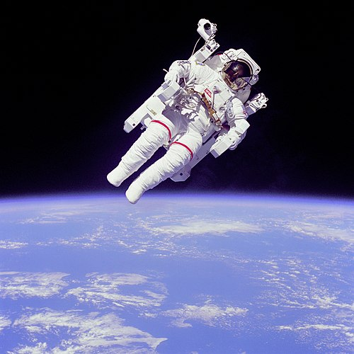

Portada
Portal de la comunidad
Actualidad
Cambios recientes
Páginas nuevas
Página aleatoria
Ayuda
Donaciones
Herramientas
Lo que enlaza aquí
Cambios en enlazadas
Subir archivo
Páginas especiales
Enlace permanente
Información de la página
Elemento de Wikidata
Imprimir/exportar
Crear un libro
Descargar como PDF
Versión para imprimir
En otros proyectos
Wikimedia Commons
MediaWiki
Meta-Wiki
Wikisource multilingüe
Wikiespecies
Wikilibros
Wikidata
Wikimanía
Wikinoticias
Wikiquote
Wikisource
Wikiversidad
Wikiviajes
Wikcionario

Shostakóvich Dmitri
Dmitri Dmítrievich Shostakóvich (en ruso: Дмитрий Дмитриевич Шостакович, romanización: Dmitrij Dmitrievič Šostakovič, Acerca de este sonido pronunciación (?·i); San Petersburgo, 25 de septiembre de 1906-Moscú, 9 de agosto de 1975), conocido como Dmitri Shostakóvich, fue un compositor y pianista soviético, uno de los músicos más importantes del siglo xx. Shostakóvich se hizo famoso en los años iniciales de la Unión Soviética, con obras como su Primera Sinfonía o la ópera La nariz, que combinaban con gran originalidad la tradición rusa y las corrientes modernas procedentes de occidente. Posteriormente, su música fue unas veces denunciada como decadente y reaccionaria y otras alabada como representativa del nuevo arte socialista por el Partido Comunista de la Unión Soviética (PCUS). En público, siempre se mostró leal con el sistema soviético, ocupó responsabilidades importantes en las instituciones artísticas, aceptó pertenecer al PCUS en 1960 y llegó a ser miembro del Sóviet Supremo de la Unión Soviética. Su actitud frente al gobierno y el Estado soviético ha sido objeto de agrias polémicas y se ha discutido enconadamente si fue o no un disidente clandestino frente a la URSS. Tras un período inicial en el que parecen primar las influencias de Serguéi Prokófiev, Ígor Stravinski y Paul Hindemith, Shostakóvich desarrolló un estilo híbrido del que es representativa su ópera Lady Macbeth de Mtsensk (1934). Posteriormente, derivó hacia un estilo posromántico, donde destaca la Quinta Sinfonía (1937), y en el que la influencia de Gustav Mahler se combina con la tradición musical rusa, con Modest Músorgski y Stravinski como referentes importantes. Integró todas esas influencias creando un estilo muy personal. Su música suele incluir contrastes agudos y elementos grotescos, con un componente rítmico muy destacado. En su obra orquestal destacan quince sinfonías y seis conciertos, en su música de cámara cabe mencionar especialmente sus quince cuartetos de cuerdas, también compuso varias óperas, así como música de cine y ballet.
- Pandemia de COVID-19
- Conflicto entre Kirguistán y Tayikistán
- Protestas en Colombia
- 8 de mayo: Súper Rugby Australia y Aotearoa: Finales
- 7-9 de mayo: Gran Premio de España de Fórmula 1
- 6 de mayo: Carlos Timoteo Griguol, futbolista y entrenador argentino (84)
- 6 de mayo: Humberto Maturana, biólogo y epistemólogo chileno (92)
- 5 de mayo: Abelardo González, futbolista español (76)
- 5 de mayo: Urbano Marín, juez chileno (85)
- 5 de mayo: Guillermo Murray, actor argentino (93)
- 5 de mayo: T. K. S. Natarajan, actor y cantante indio (87)
- 5 de mayo: Philipose Mar Chrysostom, obispo metropolitano indio (103)
- 5 de mayo: Bertil Johansson, futbolista sueco (86)
- 5 de mayo: Gueorgui Prokopenko, nadador ucraniano (84)
- 5 de mayo: George Jung, narcotraficante estadounidense (78)
- 4 de mayo: Raúl Scarrone, obispo uruguayo (90)
- 4 de mayo: Simon Achidi, político camerunés (86)
- 4 de mayo: Omar Hugo Gómez, futbolista argentino (65)
- 8-9 de mayo: Jornadas de Recuerdo y Reconciliación en Honor de Quienes Perdieron la Vida en la Segunda Guerra Mundial
- 8 de mayo: Día de la Victoria en Europa
- 8 de mayo: Día Mundial del Cáncer de Ovario
- 8 de mayo: Día Mundial del Comercio Justo
- 8 de mayo: Día Mundial de la Cruz Roja
- 6 de mayo: Día Internacional Sin Dietas
Actualidad
Fallecimientos
Conmemoraciones y fiestas
Batalla de Crisópolis
La batalla de Crisópolis fue un enfrentamiento armado entre los dos coemperadores romanos Constantino I (r. 306-337) y Licinio (r. 308-324), que se libró el 18 de septiembre de 324, en Crisópolis (moderna Üsküdar), localidad cercana a la ciudad de Calcedonia (hoy Kadıköy), en lo que actualmente son los distritos del lado oriental de Estambul, Turquía. Previamente, Licinio había sido sitiado en Bizancio, y tras la derrota de su armada en la batalla del Helesponto, decidió retirar sus tropas a Calcedonia, localizada al otro lado del Bósforo. Las fuerzas constantinianas lo persiguieron y vencieron en Crisópolis. Esta victoria consolidó a Constantino como único emperador del Imperio romano y culminó el periodo de la tetrarquía.
Recurso del día
Efemérides
8 de mayo
Otros proyectos de la Fundación Wikimedia
Commons Wikcionario
Imágenes y multimedia Diccionario libre
WikidataWikilibros
Base de datos libre Libros de texto y manuales
Wikinoticias Wikiquote
Noticias libres Colección de citas
WikisourceWikispecies
Biblioteca libre Directorio de especies
Wikiversidad Wikiviajes
Recursos de aprendizaje Guía de viajes